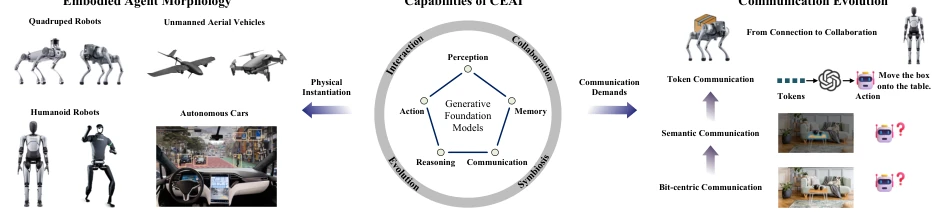
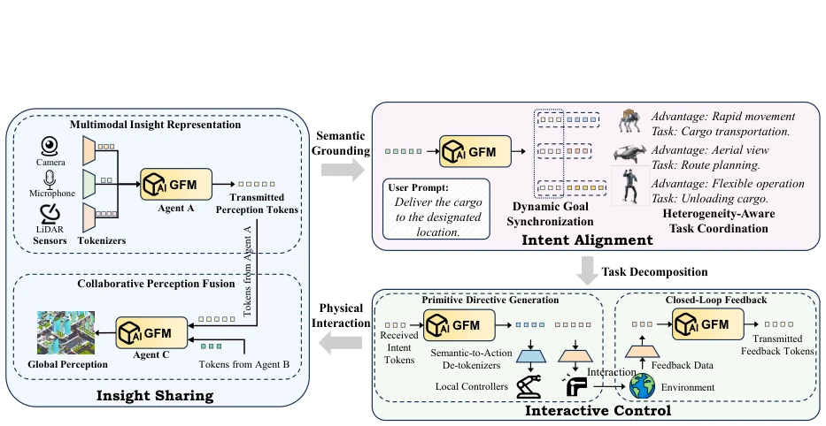
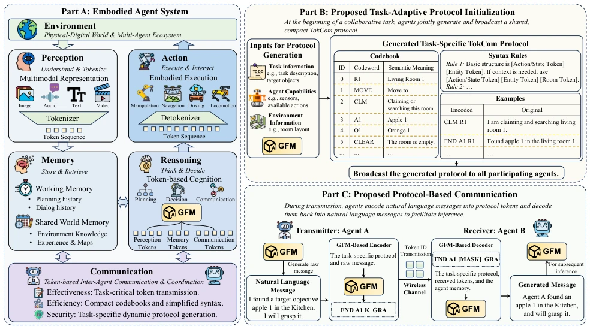
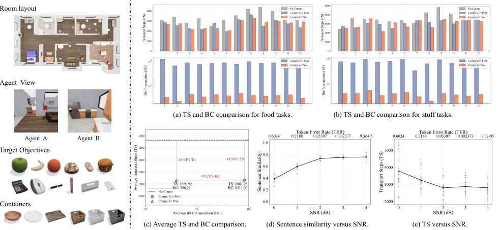

This paper adds a "compressed package" to the "chat" of embodied intelligence, attempting to solve the pain point that large model communication consumes too much traffic. The authors keenly point out that directly using GFM tokens for communication incurs too high overhead, while traditional semantic communication is too rigid. The proposed "task-adaptive protocol" is a clever strategy, cutting the general vocabulary into small vocabularies to save bits. However, the drawback lies in: this is essentially a protocol forced together relying on Prompt engineering, generalization is questionable, and experiments only run in simulation environments, multipath fading of real wireless channels was not tested much. However, linking communication efficiency directly to task success rate (TS), rather than just bit error rate, this idea is very Embodied, worth affirming.
Embodied agents (CEAI) require collaboration, but existing communication paradigms do not work. Bit-Centric paradigm transmitting raw data wastes too much bandwidth [5]. Semantic communication (SemCom) although extracts semantics, for specific tasks, it is difficult to adapt to dynamic collaboration scenarios [6]. Directly transmitting GFM generated tokens has high overhead (vocab approx 10^5, each token requires 17-18 bits), and ambiguity exists [7]. Therefore, a "native intelligent interface" that can compress while maintaining task semantics is needed. Existing SemCom lacks support for long-term collaboration intent, while CEAI needs to share perception, intent, and interaction information, this puts higher requirements on the flexibility and effectiveness of communication.

Fig. 1. A conceptual framework for CEAI. The figure illustrates three key components. Left: A diverse array of embodied intelligent agents. Center: The core capabilities of embodied intelligence, anchored by GFMs. These capabilities, including perception, memory, reasoning, communication, and action, drive advanced behaviors such as environmental interaction, multi-agent collaboration, and continuous evolution, ultimately fostering symbiosis with the physical world. Right: The requisite evolution of communication paradigms, shifting the focus from simple connectivity to intelligent collaboration.

Fig. 2. TokCom capabilities in CEAI across insight sharing, intent alignment, and interactive control.
The framework core is the "task-adaptive protocol". The process is divided into three steps: 1. Initialization: Before task starts, GFM generates shared protocol (including compact Codebook, grammar rules, examples); 2. Encoding: Sender uses GFM to distill natural language messages into protocol Token IDs; 3. Decoding: Receiver combines protocol and context to restore semantics. The innovation lies in replacing general large vocabularies with task-related small vocabularies (e.g., 32 tokens require only 5 bits), and reduce ambiguity through grammar rule constraints. Communication module embedded in GFM cognitive loop, achieving closed loop from communication to execution. Protocol generation based on context prompts, no extra training needed, lowers deployment threshold. Additionally, receiver utilizes grammar constraints and local memory, can infer missing semantics when Tokens are lost, improving robustness.

Fig. 3. Proposed TokCom-assisted CEAI framework. Part A presents the embodied agent system, including perception, memory, reasoning, action, and communication modules. The proposed components are highlighted in Parts B and C: Part B illustrates task-adaptive protocol initialization, while Part C presents protocol-based communication, in which agents encode natural-language messages into protocol tokens and decode the received tokens for subsequent inference.
Based on ThreeDWorld moving task [14]. Comparison schemes: No communication, standard TokCom (directly transmit GFM token), this paper's protocol-guided TokCom. Metrics: Transport Steps (TS) and Bits Consumed (BC). Results show, protocol-guided scheme BC drops to about 5% of standard scheme, TS remains comparable. Under AWGN channel, through Mask strategy simulating packet loss, proves protocol structure helps restore missing semantics. However, experiments do not involve entropy coding, actual compression rate might be higher. Additionally, protocol initialization overhead not included in BC, if task is short then impact is large.

Fig. 4. Simulation environment and results. Part A shows the room layout, target objects, and containers. Parts B(a) and B(b) report TS and BC for food and stuff tasks, respectively. Part B(c) compares average TS and BC across schemes. Parts B(d) and B(e) show sentence similarity and TS versus SNR.